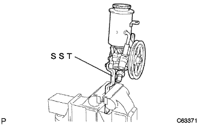
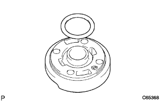
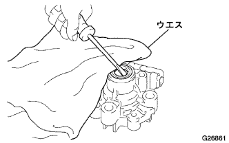
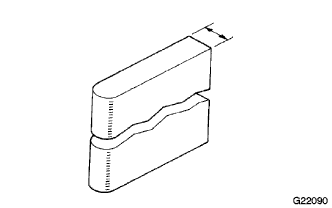
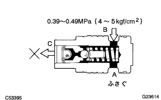

Vane pump ASSY degradation |
| 1. Vane pump assigned |
|  |
Use SST to fix the vane pump asser to the vise.
| 2. Vane pump oil reservoir Assy |
Remove the three bolts and remove the oil reservoir ASSY from the vane pump housing.
Use a minus thin blade driver to remove the vane pump oil reservoir O -ring from the oil reserve ass.
| 3. Pump bracket FR removed |
Remove the two bolts and remove the pump bracket FR and pump bracket RR.
| 4. Remove the flow control valve |
 |
Use a socket wrench 27mm to remove the pressureport union from the housing front.
Use a negative thin blade driver to remove the pressureport union O -ring from the pressureport union.
Remove the flow control valve from the housing front.
Remove the compression spring from the housing front.
| 5. Power steering oil pressure sensor removed |
Take off the oil pressure sensor from the housing front.
| 6. Remove the vane pump Houjin Griller |
 |
Remove the four bolts and remove the Houjin Griller from the housing front.
Remove the housing O -ring from the Houjin Griller.
| 7. Shaft SUB-ASSY (Puritsuki) |
Use two minus thin blade drivers to remove the shaft snap ring from the shaft with puli.
Remove the shaft with pulley from the Houjin Griller.
| 8. Remove the vannopon procedure |
Remove 10 vane pump plates from Bane Pon Prota.
Remove the Vane Pon Pro Tuta from the housing front.
| 9. Remove the vane pump cam ring |
| 10. Remove the vane pump side plate front |
Remove the side plate front from the housing front.
|  |
Remove the side plate O -ring No.1 from the side plate front.
 |
Remove the side plate O -ring No.2 from the housing front.
| 11. Bane pump housing oil seal removed |
|  |
Use a flathead screwdriver to remove the housing oil seal from the housing front.
| 21 |
Use a micrometer and caliper gauge to measure the inner diameter of the bush and the outer diameter of the shaft and calculate the oil clearance.
Confirm that the bain pump shaft and the bain pump housing front are not scratched or remarkable.
| 13. Geketomen of vane pump plate and vane ponpra |
|  |
Use a micrometer to check the dimensions of the figure in the figure.
 |
Inspect the gap between the vane pump plate and the vane ponpreta using a chickness gauge.
| 14. Flow control valve inspection |
Confirm that the flow control valve and holes are not scratched.
Apply a power steering fluid to the flow control valve.
When the flow control valve is inserted into the housing front, confirm that the flow control valve sinks smoothly with its own weight.
|  |
Perform airtight inspection of flow control valve.
Close the hole a in the figure.
0.39-0.49MPa {4-5kgf · cm in the hole B in the figure2Put the air pressure of}.
Confirm that there is no leakage of the air than the hole C in the figure.
| 15. Flow control valve compression spring inspection |
Measure the free length of the compression spring.
| 16. Pressureport union inspection |
Make sure that there is no remarkable damage to the union seat in the pressport union.